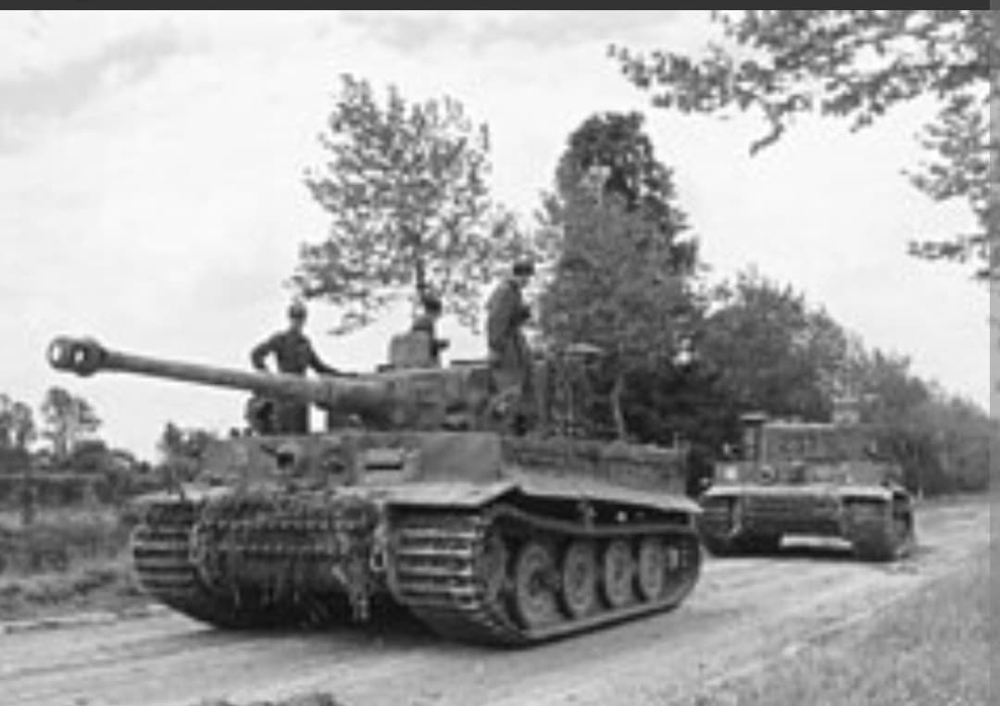
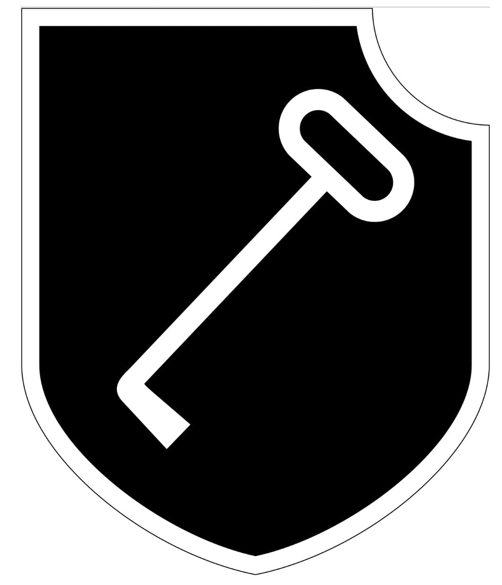
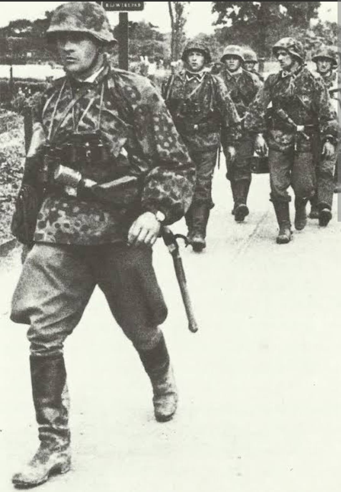

De la garde prétorienne du régime nazi à l'unité blindée fanatisée de la Waffen-SS

Créée en 1933 sous le nom de SS-Stabswache Berlin par Sepp Dietrich, la 1. SS-Panzer-Division « Leibstandarte SS Adolf Hitler » (LSSAH) est à l'origine la garde personnelle rapprochée d'Adolf Hitler.
Transformée progressivement en régiment motorisé, puis en brigade, en division d'infanterie motorisée et enfin en division blindée (*Panzer-Division*), elle constitue le noyau historique et idéologique de la Waffen-SS. Connue pour sa grande capacité combatrice, elle s'est également illustrée par de nombreux crimes de guerre commis sur tous les fronts.
Unité prétorienne du NSDAP, la Leibstandarte sélectionnait à l'origine ses recrues selon des critères physiques et idéologiques raciaux extrêmement stricts.
Son insigne militaire célèbre représente un **passeroche (ou fausse clé / Dietrich)** inscrit dans un écu, un jeu de mots héraldique faisant directement référence au nom de son premier commandant emblématique, **Josef « Sepp » Dietrich** (*Dietrich* signifiant fausse clé en allemand).

La LSSAH participe à l'invasion de la Pologne (1939), à la campagne des Pays-Bas et de France (1940), puis à la campagne des Balkans (1941).
Engagée lors de l'**Opération Barbarossa** contre l'Union soviétique, l'unité subit et inflige de très lourdes pertes dans le secteur Sud (Rostov, Kharkov). En juillet 1943, dotée des nouveaux chars lourds *Tiger I*, la division joue un rôle de premier plan lors de la **bataille de Koursk** (opération *Citadelle*).

Transférée en France en 1944, la division affronte les forces alliées lors de la **bataille de Normandie**, tentant d'enrayer la percée anglo-américaine dans le secteur de Caen et de la contre-offensive de Mortain, avant d'être quasiment détruite dans la **poche de Falaise**.
Reconstituée à la hâte, elle participe à la **bataille des Ardennes** en décembre 1944. C'est durant cette offensive que le *Kampfgruppe Peiper* (groupe de combat issu de la LSSAH) perpétue le tristement célèbre **massacre de Malmedy**, assassinant 84 prisonniers de guerre américains. Elle termine la guerre en Hongrie et en Autriche avant de se rendre aux Américains en mai 1945.
Au-delà de ses performances militaires sur le plan tactique, la 1. SS-Panzer-Division Leibstandarte demeure le symbole de la brutalisation et du fanatisme idéologique de la Waffen-SS.
Lors du procès de Nuremberg en 1946, la Waffen-SS dans son ensemble — dont la LSSAH était le régiment fondateur — a été déclarée **organisation criminelle** pour son rôle direct dans des crimes de guerre et crimes contre l'humanité systématiques.
Page du Musée HOP WW2 – Section Unités & Divisions Célèbres